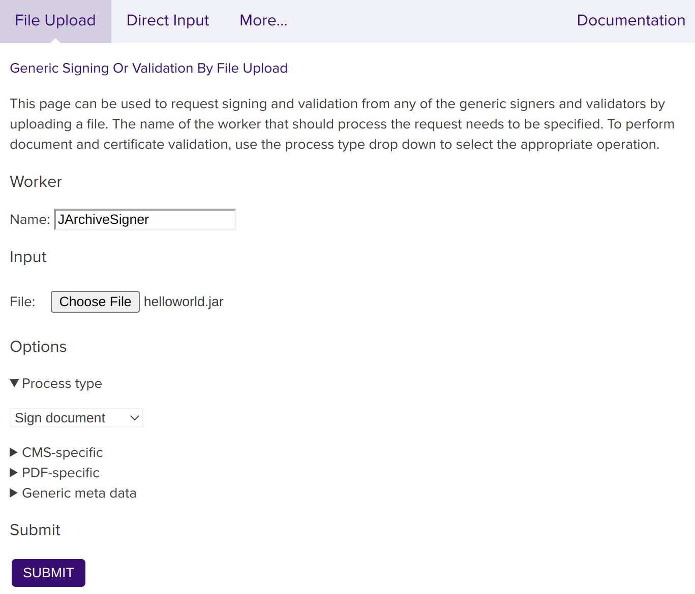

Code Signing with JAR Signatures
The Java Archive (JAR) package format can be used for packaging Java applications and libraries. The JAR signer in SignServer is called JArchive Signer.
Signed JAR files can optionally include a time-stamp response from a TSA using the RFC#3161 format.
JArchive Signer Properties
The following lists the relevant configuration properties for the JArchive Signer:
Property | Description |
|---|---|
| Algorithm for the digest of the file entries and the manifest. Example: SHA-256 |
| True if existing signature files should be kept. |
| True if an existing signature with the same name should be overwritten and not fail with an error. |
| Specifying the algorithm used to use for the signature. Example: SHA256withRSA |
| The type of signature name to use. With the type VALUE, the name is taken from the |
| URL of external timestamp authority if time-stamping should be used and with an external TSA. |
| Worker ID or name of internal timestamp signer in the same SignServer if time-stamping should be used and with a time-stamp signer in SignServer. |
| True if the offset at which each file entry's data starts should be aligned to 4 bytes. Use this for Android apps. |
For all available properties, refer to JArchive Signer.
Set up the JAR Signer
To configure a JArchive Signer, follow the steps below and use the template called jarchive_signer.properties:
Add Signer
Open the Admin Web.
Go to the Workers page and click Add to add a new worker.
On the Add Worker / Load Configuration page, choose the method From Template.
In the Load From Template list menu, select jarchive_signer.properties and click Next.
Click Apply and select the worker name JArchiveSigner.
Configure Signer
Click the Configuration tab and make the appropriate adjustments for:
NAME: Specify a name.
CRYPTOTOKEN: If using SignServer Enterprise, this should match the name of the crypto token configured in Set up a Crypto Worker. If you are on an Appliance, this crypto token was created for you with the name HSMCryptoToken10. If using SignServer Cloud, a CryptoTokenP12 is provided with the instance, containing all the sample keys and certificates you need, and you can continue to the last step and ensure that your signer is in an ACTIVE state.
Generate a new key pair for the signer, by clicking the Status Summary tab and then Renew Key.
Select a key algorithm, such as RSA, and a key specification such as 2048, and click Generate.
Create a Certificate Signing Request (CSR) for the new key pair by clicking Generate CSR.
Select a signature algorithm like SHA256withRSA and specify a subject DN (name) for the new certificate such as CN=MS Auth Code Signer Test,O=My Company, C=SE, and click Generate.
Click Download and save the CSR file.
Bring the CSR file to your Certification Authority to get the certificate and the CA certificates in return.
 Before installing certificates in a production system, make sure to check the signer's authorization since the signer will be fully functional and ready to receive requests once the certificates are installed.
Before installing certificates in a production system, make sure to check the signer's authorization since the signer will be fully functional and ready to receive requests once the certificates are installed.Click Install certificates and browse for the certificate files. Start by providing the signer certificate and then follow with the issuing CA certificates in turn. Click Add to list the certificates in the chain.
When all certificates are added in the correct order, click Install.
Once the certificates are installed, the signer should be in state ACTIVE. If not, check the top of its Status Summary page for any errors.
Using the JArchive Signer
To submit a JAR file to be signed, use one of the following available interfaces:
Client Web Form Upload: Submit and sign a JAR with the JArchive signer using the SignServer Client Web form in your web browser.
Submit File Using SignClient: Submit and sign a JAR with the JArchive signer using the SignServer SignClient.
Web Services: Integrate in a custom application using the SignServer Client Web Services (WS) interface. For more information, see section Code Signing with Plain Signatures.
Scripting Using cURL or wget: Use an HTTP client such as cURL or wget. For more information, see section Code Signing with Plain Signatures.
Submit and Sign File using Client Web
The following describes how to submit and sign a JAR with the JArchive signer using the SignServer Client Web form in your web browser.
To download an example JAR and then submit and sign the file using the Client Web pages, do the following:
Download helloworld.jar to test JAR signing.
Go to the SignServer Client Web Generic page.
Scroll down on the page to the Generic Signing Or Validation by File Upload section and specify JArchiveSigner in the Worker Name field.
Click Choose File, select helloworld.jar, and click Submit.

You will be prompted to save the Signed JAR file helloworld.jar.
Submit and Sign File Using SignClient
To submit a JAR file for signing using the SignServer SignClient, send a request to the worker using the following command:
bin/signclient signdocument -workername JArchiveSigner -infile helloworld.jar -outfile helloworldsigned.jarThe workername is the name of the worker in your SignServer server, infile the path to the unsigned input file to sign, and outfile the filename the signed version will be written to.
Verifying a Signed JAR File
The Java jarsigner tool can be used to verify the signatures and certificates of JAR files. The tool is available in the Java Development Kit (JDK).
After installing the JDK, open a command prompt, and execute the command (as User) with the path to the signed file:
Jarsigner Verification Example
jarsigner -verify -strict MyJAR-signed.jar To get additional information, as well as the certificates, also specify the options -verbose and -certs.